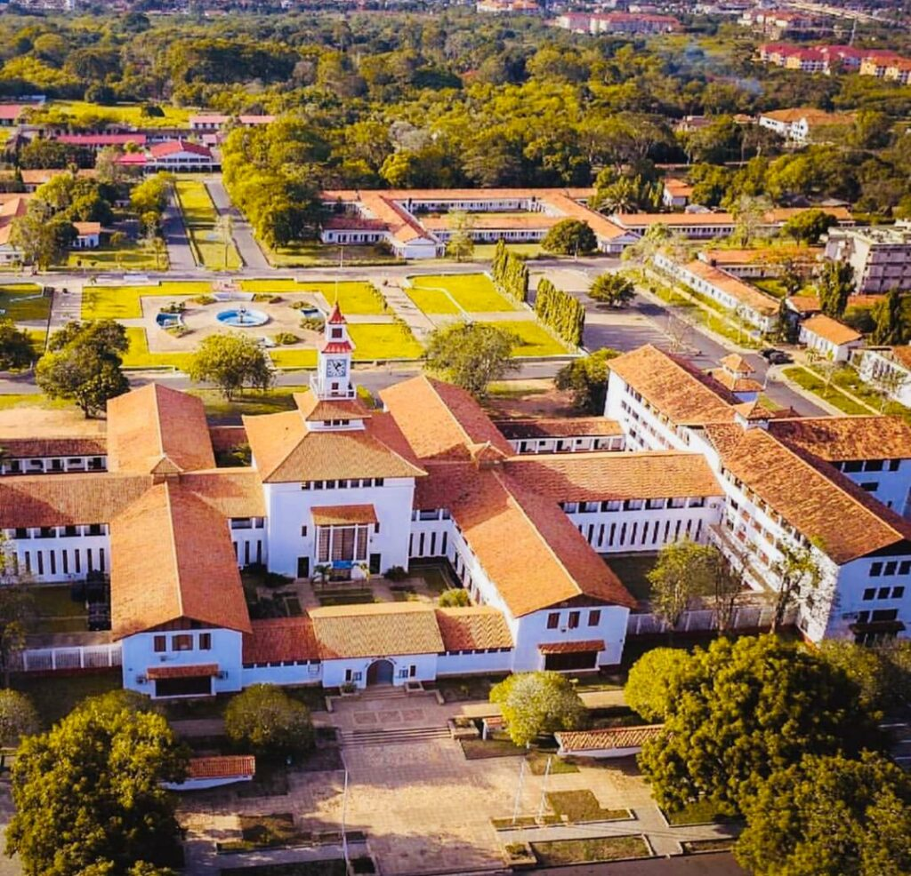

About The Department of Computer Science
History
Established in 1985, the Computer Science Department at the University of Ghana emerged as a pioneer in technological education within the region. Initially conceived as a response to the growing demand for computing expertise, the department has since evolved into a hub for innovation, research, and academic excellence in the field of computer science in West Africa.
Mission
The department is committed to advancing computer science education, research, and technological innovation. Its mission is to empower students with a comprehensive understanding of computer science fundamentals, foster a culture of innovation, and contribute to the development of cutting-edge technologies that address local and global challenges.
Faculty
The department boasts a diverse and esteemed faculty comprising experienced educators and industry professionals. These scholars bring a wealth of expertise in various domains of computer science, including artificial intelligence, cybersecurity, data science, and software engineering. Their dedication to research and teaching has garnered recognition both nationally and internationally, positioning the department as a leader in academic excellence.
Impact
The Computer Science Department at the University of Ghana has been instrumental in shaping the landscape of computer science education in Ghana. Through its rigorous curriculum, research initiatives, and collaborations with industry partners, the department has produced a cohort of highly skilled professionals who have significantly contributed to technological advancements in the country. Its graduates are at the forefront of innovation, driving progress in diverse sectors such as finance, healthcare, and telecommunications.